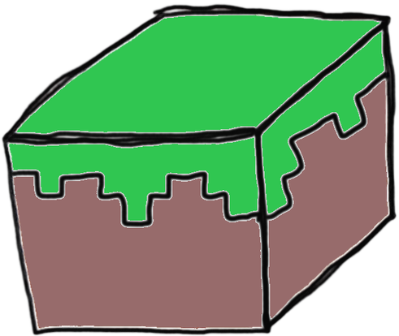

Minecraft
Minecraft is a sandbox survival game that allows players to get creative on what they want to do with their world. To get a survival experience, players play on survival mode. They spawn in a open world with nothing in their inventory and have to craft and mine blocks to upgrade their arsenal and equipment. Minecraft developer set the final goal of survival to beat the enderdragon.

source: Minecraft Fandom
Terraria
Terraria is a 2d survival game that only has survival mode. It is similar to Minecraft, but is in 2D. Both games are very unique in their own way. You can also build whatever you want in Terraria just like in Minecraft, but you have to get creative with building around the 2D limitations. The End goal of Terraria is to be beat the Moon Lord.

source: Terraria Home Page
Rust
Rust is a competitive survival game, where players are spawned into the world just like Minecraft. In this game however, their are other players that are in your world or in this game case, Server. Players can team up together and go fight other players, destorying their base and taking all their resources. This game communities are very toxic and should not be taken seriously.

source: IGN Page